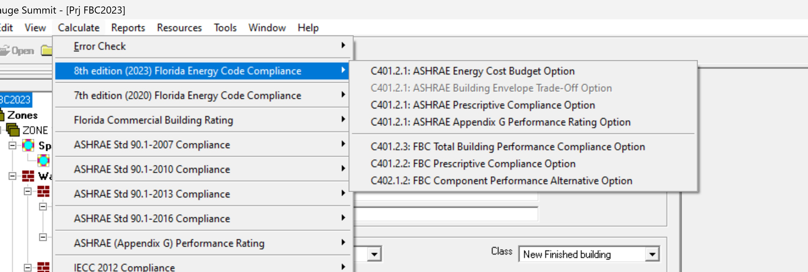

Calculate Menu
|
Calculate Menu |

The 'Calculate' menu has the following sub menus:
Error Check - Displays the data errors in the project. It usually consists of the component being error-checked, an error message, possible cause, and possible resolution. It is recommended that an error check be performed before a compliance calculation is run. You can also check for errors by clicking the red 'Check' label at the bottom of the Project Explorer. Nodes with errors appear in red. Hovering the mouse on the node with error displays a tool tip with the error message.
* Whole Building - Checks errors for the whole building.
* Envelope Only - Checks errors only for the building envelope namely the walls, floors and roof.
7th Edition (2020) Florida Energy Code Compliance - Compliance reports will be displayed on the screen when Calculate -> Compliance and one of the following options is chosen. The Compliance sub menu has the following options:
* C402.1.1: ASHRAE Energy Cost Budget Option - Runs the Energy Cost Budget Method described in ASHRAE 90.1-2016. This is a computer based annual energy performance calculation. Under this method, energy performance is calculated for the entire building based on the envelope and major energy-consuming systems specified in the design, and simultaneously for a reference building of the same configuration but with reference features.
* C402.1.1: ASHRAE Building Envelope Trade-Off Option (Not supported at this time) .
* C402.1.1: ASHRAE Prescriptive Compliance Option - Runs the Prescriptive Compliance Option described in ASHRAE 90.1-2016. Under this method, the building encelope must meet minimum prescriptive criteria.
* C402.1.1: ASHRAE Appendix G Performance Rating Option - Runs the Appendix G perfromance Rating Method described in ASHRAE 90.1-2016 - App G. This is a computer based annual energy performance calculation. Under this method, energy performance is calculated for the entire building based on the envelope and major energy-consuming systems specified in the design, and simultaneously for a baseline building of the same configuration but with baseline features. (Not supported at this time)
* C402.1.3: FBC Total Building Performance Compliance Option - Runs the Total Building Performance Compliance. This is a computer based annual energy performance calculation. Under this method, energy performance is calculated for the entire building based on the envelope and major energy-consuming systems specified in the design, and simultaneously for a reference building of the same configuration but with reference features.
* C402.1.2: FBC Prescriptive Compliance Option - Runs the Prescriptive Compliance Option Under this method, the building encelope must meet minimum prescriptive criteria.
* C402.1.5: FBC Component Performance Alternative Option - Runs the Component Perfromance Alternative Option. Under this method, trade-off is allowed between envelope components.
8th Edition (2023) Florida Energy Code Compliance - Compliance reports will be displayed on the screen when Calculate -> Compliance and one of the following options is chosen. The Compliance sub menu has the following options:
* C401.2.1: ASHRAE Energy Cost Budget Option - Runs the Energy Cost Budget Method described in ASHRAE 90.1-2016. This is a computer based annual energy performance calculation. Under this method, energy performance is calculated for the entire building based on the envelope and major energy-consuming systems specified in the design, and simultaneously for a reference building of the same configuration but with reference features.
* C401.2.1: ASHRAE Building Envelope Trade-Off Option (Not supported at this time) .
* C401.2.1: ASHRAE Prescriptive Compliance Option - Runs the Prescriptive Compliance Option described in ASHRAE 90.1-2016. Under this method, the building encelope must meet minimum prescriptive criteria.
* C401.2.1: ASHRAE Appendix G Performance Rating Option - Runs the Appendix G perfromance Rating Method described in ASHRAE 90.1-2019 - App G. This is a computer based annual energy performance calculation. Under this method, energy performance is calculated for the entire building based on the envelope and major energy-consuming systems specified in the design, and simultaneously for a baseline building of the same configuration but with baseline features.
* C402.2.2: FBC Total Building Performance Compliance Option - Runs the Total Building Performance Compliance Option described in IECC 2018. This is a computer based annual energy performance calculation. Under this method, energy performance is calculated for the entire building based on the envelope and major energy-consuming systems specified in the design, and simultaneously for a reference building of the same configuration but with reference features.
* C402.2.3: FBC Prescriptive Compliance Option - Runs the Prescriptive Compliance Option described in IECC 2018. Under this method, the building encelope must meet minimum prescriptive criteria.
* C402.2.3: FBC Component Performance Alternative Option - Runs the Component Perfromance Alternative Option described in IECC 2018. Under this method, trade-off is allowed between envelope components.
Florida Commercial Building Rating
* 2008 FL Rating - Runs a simulation that compares the total energy use of the design building under consideration, with the reference building created using the ASHRAE 90.1 (2007, Appendix G) standard. The rating report gives an index called the EPI (Energy Performance Index) that indicates how much the building under consideration costs to run as compared to the baseline reference building.
2007 ASHRAE 90.1 Compliance
* Energy Cost Budget Method - Runs the whole building code calculation. This is a computer based annual energy performance calculation. Under this method, energy performance is calculated for the entire building based on the envelope and major energy-consuming systems specified in the design and simultaneously for a reference building of the same configuration, but with reference features. Note that this runs and displays only the Whole building compliance calculation.
* Envelope Trade-Off Option - Runs the component code calculation. This is a computer based calculation methodology. Under this method, each component of the building systems must meet minimum performance standards. Note that this runs and displays only the Envelope compliance calculation. (Not supported at this time)
* Prescriptive Building Option - This option checks for line by line compliance of each element in the building.
2010 ASHRAE 90.1 Compliance
* Energy Cost Budget Method - Runs the whole building code calculation. This is a computer based annual energy performance calculation. Under this method, energy performance is calculated for the entire building based on the envelope and major energy-consuming systems specified in the design and simultaneously for a reference building of the same configuration, but with reference features. Note that this runs and displays only the Whole building compliance calculation.
* Envelope Trade-Off Option - Runs the component code calculation. This is a computer based calculation methodology. Under this method, each component of the building systems must meet minimum performance standards. Note that this runs and displays only the Envelope compliance calculation. (Not supported at this time)
* Prescriptive Building Option - This option checks for line by line compliance of each element in the building.
2013 ASHRAE 90.1 Compliance
* Energy Cost Budget Method - Runs the whole building code calculation. This is a computer based annual energy performance calculation. Under this method, energy performance is calculated for the entire building based on the envelope and major energy-consuming systems specified in the design and simultaneously for a reference building of the same configuration, but with reference features. Note that this runs and displays only the Whole building compliance calculation.
* Envelope Trade-Off Option - Runs the component code calculation. This is a computer based calculation methodology. Under this method, each component of the building systems must meet minimum performance standards. Note that this runs and displays only the Envelope compliance calculation. (Not supported at this time)
* Prescriptive Building Option - This option checks for line by line compliance of each element in the building.
2016 ASHRAE 90.1 Compliance
* Energy Cost Budget Method - Runs the whole building code calculation. This is a computer based annual energy performance calculation. Under this method, energy performance is calculated for the entire building based on the envelope and major energy-consuming systems specified in the design and simultaneously for a reference building of the same configuration, but with reference features. Note that this runs and displays only the Whole building compliance calculation.
* Envelope Trade-Off Option - Runs the component code calculation. This is a computer based calculation methodology. Under this method, each component of the building systems must meet minimum performance standards. Note that this runs and displays only the Envelope compliance calculation. (Not supported at this time)
* Prescriptive Building Option - This option checks for line by line compliance of each element in the building.
* Appendix G Performance Rating Option - Runs the Appendix G perfromance Rating Method described in ASHRAE 90.1-2016 - App G. This is a computer based annual energy performance calculation. Under this method, energy performance is calculated for the entire building based on the envelope and major energy-consuming systems specified in the design, and simultaneously for a baseline building of the same configuration but with baseline features. (Not supported at this time)
ASHRAE (Appendix G) Performance Rating - This specifies a performance rating method and is a modification of the Energy Cost Budget Method specified in ASHRAE Standard 90.1. It is used for buildings that substantially exceed the requirements in Standard 90.1 but is not meant as an alternative to the Energy Cost Budget requirements stated in Standard 90.1. It is useful for evaluating all proposed designs, including alterations and additions to existing buildings, except designs with no mechanical systems.
* Version 2007 - Runs an Appendix G rating for ASHRAE Standard 90.1 2007
* Version 2010 - Runs an Appendix G rating for ASHRAE Standard 90.1 2010
* Version 2013 - Runs an Appendix G rating for ASHRAE Standard 90.1 2013
* Version 2016 - Runs an Appendix G rating for ASHRAE Standard 90.1 2016 (Not supported at this time)
IECC 2012 Compliance
* Total Building Performance Compliance - Runs the whole building code calculation. This is a computer based annual energy performance calculation. Under this method, the energy performance is calculated for the entire building and compared to a reference structure generated via the IECC 2012 Code.
* Prescriptive Compliance - Runs a compmenent-by-component compliance for eash building element based off the IECC 2012 Code.
IECC 2015 Compliance
* Total Building Performance Compliance - Runs the whole building code calculation. This is a computer based annual energy performance calculation. Under this method, the energy performance is calculated for the entire building and compared to a reference structure generated via the IECC 2015 Code.
* Prescriptive Compliance - Runs a compmenent-by-component compliance for eash building element based off the IECC 2015 Code.
* Component performance Alternative - Runs the Component Perfromance Alternative Option described in IECC 2015. Under this method, trade-off is allowed between envelope components.
IECC 2018 Compliance
* Total Building Performance Compliance - Runs the whole building code calculation. This is a computer based annual energy performance calculation. Under this method, the energy performance is calculated for the entire building and compared to a reference structure generated via the IECC 2018 Code.
* Prescriptive Compliance - Runs a compmenent-by-component compliance for eash building element based off the IECC 2018 Code.
* Component performance Alternative - Runs the Component Perfromance Alternative Option described in IECC 2018. Under this method, trade-off is allowed between envelope components.

LEED
LEED represents The Leadership in Energy and Environmental Design (LEED) a US Green Building Council (USGBC) Rating System, the nationally accepted benchmark for the design, construction and operation of high performance green buildings. This menu option runs the following simulations.

2005 Commercial Federal Tax Deduction
Provisions in the Energy Policy Act 2005 allow for a tax deduction for energy efficient commercial buildings that reduce annual energy and power consumption by 50% compared to the ASHRAE 2001 Standard 90.1. A special approval code must be provided to use this feature. Once this code is specified by the user under the Help menu, and verified by the software, it need not be entered again till the license is valid. Following are the options available.
* Full Deduction (IRS 2006-52, IRS 2008-40, PATH 2015, $1.80/SF) - The full deduction is applicable if the whole building calculation shows a 50% or greater efficiency than the corresponding reference building for the ASHRAE Standard 90.1. This deduction is a maximum of $1.80 per square foot of the building.
* Partial Lighting (IRS 2008-40, PATH 2015, Interim Rule, up to $0.60/SF) - As per IRS guidelines documented in the notice IRS 2008-40, any commercial building with an improvement of over 25% in the lighting power density as compared to the ASHRAE 90.1 2001 requirements can qualify for a tax deduction. The deduction is scaled appropriately, as per IRS guidelines, in the 25% to 40% savings range and a deduction of $0.60 /SF can be taken for savings over 40%.
* Partial Lighting Deduction (IRS 2006-52, IRS 2008-40, IRS 2012-26 Permanent Rule, PATH 2015, $0.60/SF) - The partial deduction is applicable if the code calculation shows a 50% or greater efficiency of the building lighting than the corresponding reference building lighting for the ASHRAE Standard 90.1. This deduction is a maximum of $0.60 per square foot of the building.
* Partial System Deduction (IRS 2006-52, IRS 2008-40, IRS 2012-26, PATH 2015, $0.60/SF) - The partial deduction is applicable if the code calculation shows a 50% or greater efficiency of the building mechanical system than the corresponding reference building mechanical system for the ASHRAE Standard 90.1. This deduction is a maximum of $0.60 per square foot of the building.
* Partial Envelope Deduction (IRS 2006-52, IRS 2008-40, IRS 2012-26, PATH 2015, $0.60/SF) - The partial deduction is applicable if the code calculation shows a 50% or greater efficiency of the building envelope than the corresponding reference building envelope for the ASHRAE Standard 90.1. This deduction is a maximum of $0.60 per square foot of the building.
System Sizing - This is a beta feature that will size the user building using the DOE 2.1E simulation engine. The output report will provide the sized heating and cooling capacities for all system and plant components included in the building model.
Building Simulation
* Run DOE2.1E Simulation - This runs an energy (not code compliance) calculation on the design building using the DOE-2.1E simulation engine. It is not an option nor a requirement for code compliance. However, its output may be of useful to the designer.
** Some of the 'Calculate' menu options may or may not be visible based on the version of the program purchased

Report Viewer - After a calculation is run your report will show up in the report viewer. Use the arrow buttons to navigate through the various pages in the report.
* Export to PDF - Use the "Export to PDF" button to save a copy of the report in pdf format.